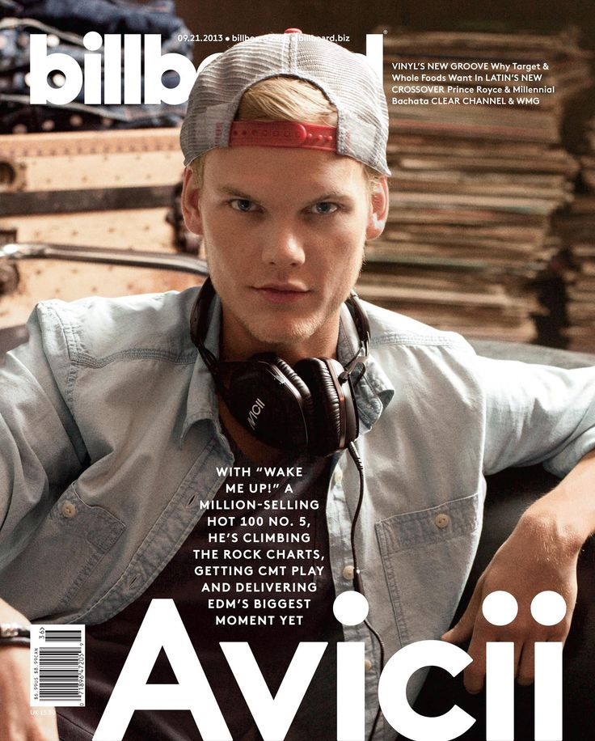
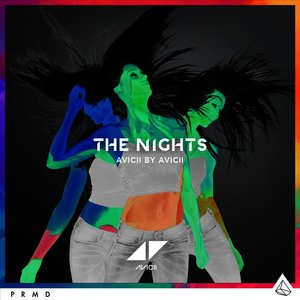
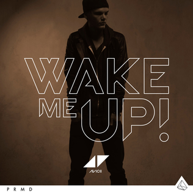
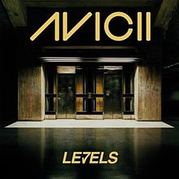

The Vietnamese German University
Department of English
Foundation Year
English for Computer Science
Avicii
Biography

Cleverly using dance music blogs as the platform to launch his career, Tim Bergling, aka Avicii, has since become one of the most prominent producers on the burgeoning Swedish house scene. Born in Stockholm in 1989, Bergling only started making music at the age of 18, writing and remixing tracks in his bedroom and then leaking them onto various blogs.
Influenced by Daft Punk and Steve Angello, his melodic house sound gained a huge following, and led to support from Tiësto, who invited him to perform a weekly residency at Privilege in Ibiza, and Pete Tong, who released first single "Manman" through his Bedroom Bedlam label.
After he remixed tracks for Little Boots, Robyn, and Dizzee Rascal, Bergling's first mainstream release, the Ministry of Sound instrumental "Seek Bromance," became a huge hit across Europe and later in the U.K., thanks to a vocal version featuring Amanda Wilson. In 2012 he released the song "2 Million" after reaching that number of followers on Facebook, while his single "Levels" and its accompanying video were nominated at that year's MTV Video Music Awards.
Toward the end of 2012 he released his highly anticipated collaborative single with Nicky Romero.
"I Could Be the One" was a smash hit and was featured heavily on reality TV shows and radio play across Europe. In 2013, Avicii teamed up with Ericsson and created the first "crowdsourced" track, which enabled the producer to connect to fans and promote his brand.
The single "3 Million" was released to celebrate the three-millionth fan on his Facebook page. "Levels" was nominated for the Best Dance Recording at the 2013 Grammys but lost out to Skrillex & Sirah's "Bangarang." Ahead of his debut album True, he released the single "Wake Me Up" in June 2013.
Featuring Aloe Blacc, it reached the top of the U.K. charts and confidently showed off his new musical direction, which was a more traditional style of pop. A remixed version of the album, True: Avicii by Avicii, arrived in 2014 and featured club-aimed versions of the same tracks. A year later his album Stories continued to explore the mixing of EDM and pop, this time with guests like Zac Brown, Wyclef Jean, Matisyahu, and Martin Garrix in support. ~ Jon O'Brien, Rovi
Avicii(2013). Billboard. Retrived 5 December 2016 from here
"The Nights"

Hey, once upon a younger year
When all our shadows disappeared
The animals inside came out to play
Hey, went face to face with all our fears
Learned our lessons through the tears
Made memories we knew would never fade
One day my father—he told me,
"Son, don't let it slip away."
He took me in his arms, I heard him say,
"When you get older
Your wild heart will live for younger days
Think of me if ever you're afraid."
He said, "One day you'll leave this world behind
So live a life you will remember."
My father told me when I was just a child
These are the nights that never die
My father told me
[Instrumental]
When thunder clouds start pouring down
Light a fire they can't put out
Carve your name into those shining stars
He said, "Go venture far beyond these shores.
Don't forsake this life of yours.
I'll guide you home no matter where you are."
One day my father—he told me,
"Son, don't let it slip away."
When I was just a kid I heard him say,
"When you get older
Your wild heart will live for younger days
Think of me if ever you're afraid."
He said, "One day you'll leave this world behind
So live a life you will remember."
My father told me when I was just a child
These are the nights that never die
My father told me
These are the nights that never die
My father told me
Hey, hey
The Nights(2013). The Nights(Single>. Retrived 5 December 2016 from here
Back to top page
Back to home page

Wake Me Up (2013). True. Retrived 5 December 2016 from here
Feeling my way through the darkness
Guided by a beating heart
I can't tell where the journey will end
But I know where to start
They tell me I'm too young to understand
They say I'm caught up in a dream
Well life will pass me by if I don't open up my eyes
Well that's fine by me
[2x]
So wake me up when it's all over
When I'm wiser and I'm older
All this time I was finding myself
And I didn't know I was lost
I tried carrying the weight of the world
But I only have two hands
Hope I get the chance to travel the world
But I don't have any plans
Wish that I could stay forever this young
Not afraid to close my eyes
Life's a game made for everyone
And love is the prize
[2x]
So wake me up when it's all over
When I'm wiser and I'm older
All this time I was finding myself
And I didn't know I was lost
Didn't know I was lost
I didn't know I was lost
I didn't know I was lost
I didn't know (didn't know, didn't know)
Back to top page
Back to home page
Levels

I get a good feeling, yeah
Get a feeling that I never, never, never, never had before, no no
I get a good feeling, yeah
[x2]
Levels (2013). True. Retrived 5 December 2016 from here
Back to top page
Back to home page
{kind=link}
{kind=link}
{kind=link}